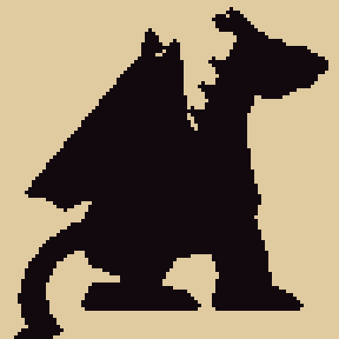
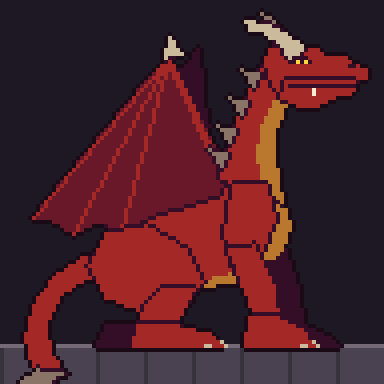
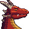
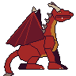

96×96, facing right, perched on the gate. Checkpoints 1 and 2 of 3: the silhouette and flat colours, with no shading yet. If the pose is right, the next pass adds V7's shading, scales and horn rings.

1 · Silhouette at 4×. A crouched predator on the wall, the wing peaking above the back.

2 · Flat colours at 4×, 9 colours. One colour per material.

V7 portrait · 48×48

In game · 2×, half a phone's width
How it is built
Head: V7's design at three quarters of its portrait size: the swept horn, the gold slit eye under the brow, one fang.
Chest (bird): deep and keeled, with gold plates from throat to belly.
Wing (bat): folded, the wrist peaking high with a clawed thumb, three fingers trailing back over the hip.
Legs (lizard, cat): crouched; the hind knee forward, the hock back, the forelegs braced, the claws gripping the wall.